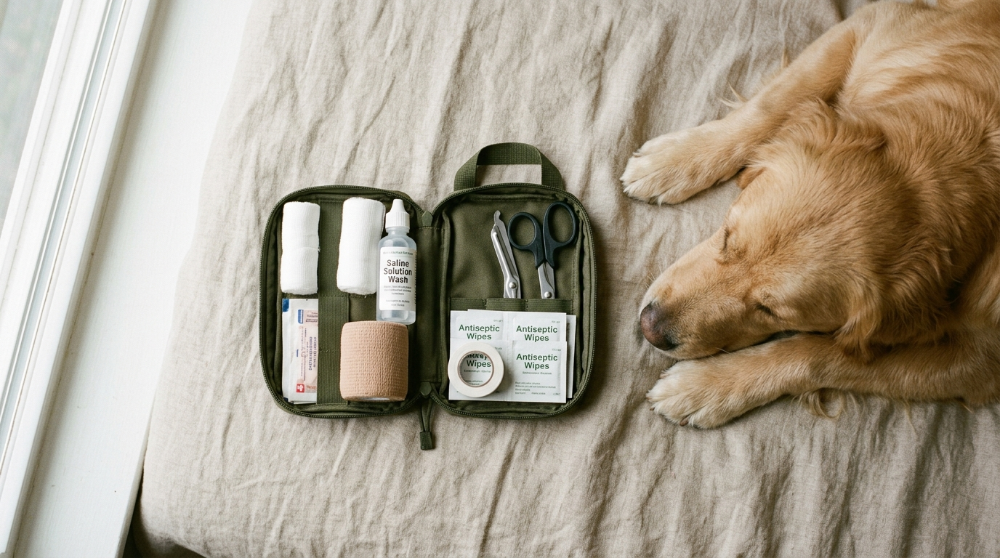

1. Checklist: Qué debe incluir el botiquín de tu perro
Arma una caja pequeña identificada y llévala también cuando salgas de viaje por carretera:
- Gasas estériles y venda autoadherente (tipo Coban): No se pega al pelo y permite proteger heridas en patas.
- Solución salina fisiológica y clorhexidina diluida al 0.5%: Los desinfectantes ideales que no arden ni dañan el tejido (evita el alcohol y el agua oxigenada en heridas abiertas).
- Termómetro digital de punta flexible: De uso exclusivo para tu mascota.
- Pinzas de punta fina o extractor de garrapatas: Para retirar espinas o garrapatas completas sin aplastarlas.
- Tarjeta con el teléfono de tu veterinario de urgencias 24/7: Ahorra minutos críticos.
2. Tabla de signos vitales normales en perros sanos en reposo
| Parámetro | Rango Normal |
|---|---|
| Temperatura corporal rectal | 38.0 °C a 39.2 °C |
| Frecuencia cardíaca | 60 a 100 latidos/min (razas grandes) • 100 a 140 (razas pequeñas) |
| Color de encías | Rosa salmón húmedo (tiempo de llenado capilar menor a 2 segundos) |
3. Golpe de calor: qué hacer y qué NO hacer
Si tu perro jadea de forma extrema, tiene la lengua azulada o rojo ladrillo y se tambalea tras estar al sol:
4. Cortes en almohadillas o sangrado leve
Las almohadillas plantares están muy vascularizadas y sangran bastante. Lava con abundante suero fisiológico para retirar tierra o vidrio, presiona firmemente con una gasa estéril durante 3 a 5 minutos continuos sin levantarla y coloca un vendaje suave para llevarlo a revisión.
5. Qué hacer ante sospecha de intoxicación
Jamás induzcas el vómito con remedios caseros (como sal o leche) sin hablar antes por teléfono con el veterinario; sustancias corrosivas o objetos punzantes causan el doble de daño al regresar por el esófago. Toma una foto del empaque o planta ingerida y acude a la clínica.
📚 Referencias Científicas y Fuentes Clínicas
- RECOVER Initiative (2024). Evidence-based Veterinary CPR & First Aid Clinical Guidelines. Journal of Veterinary Emergency and Critical Care (JVECC).
- ASPCA Animal Poison Control Center — APCC (2023). Emergency Triage and Household Toxin Guidelines. American Society for the Prevention of Cruelty to Animals.
- American Veterinary Medical Association — AVMA. Emergency Care and Pet First Aid Procedures. AVMA Animal Health Resources.
Veterinarias y estéticas con trato paciente
Encuentra clínicas y peluquerías caninas que atienden sin prisa y sin jaulas de espera.
Ver veterinarias recomendadas